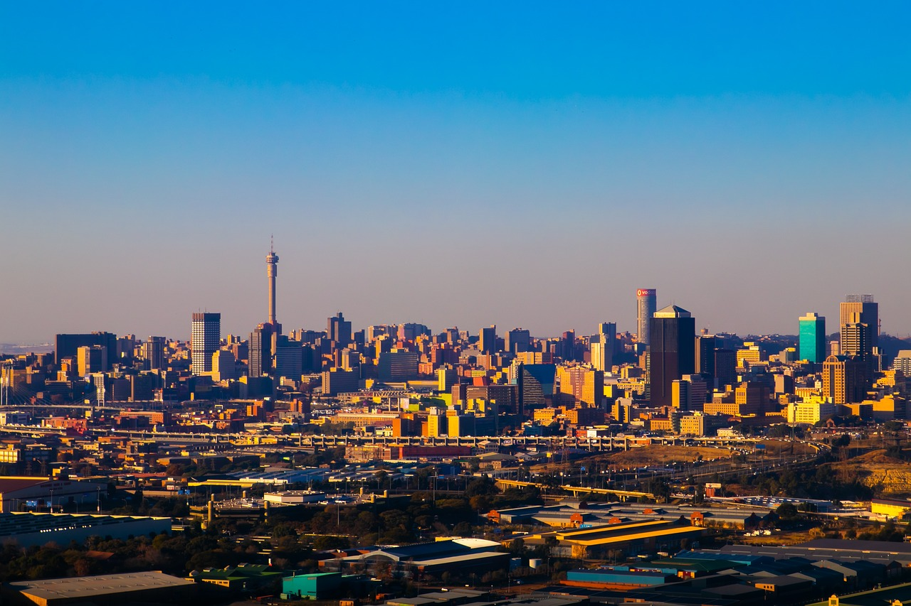
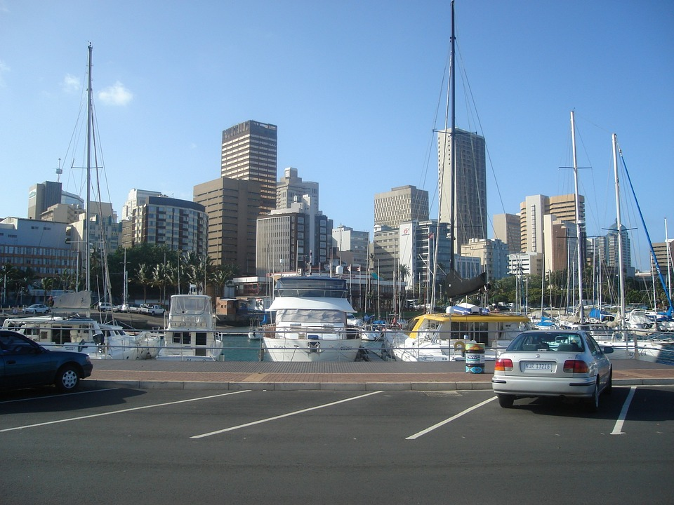

South Africa, located at the southernmost tip of Africa, is a country that offers an incredible variety of experiences for travelers. From its vibrant cities and rich cultural heritage to its breathtaking landscapes and diverse wildlife, South Africa has something for everyone. Whether you're exploring the bustling streets of Johannesburg, embarking on a safari in Kruger National Park, or relaxing on the beaches of Cape Town, South Africa promises an unforgettable adventure.
Topography
The topography of South Africa is varied and breathtakingly beautiful:
Drakensberg Mountains: The Drakensberg Mountains, which run the length of the country's eastern border, are home to picturesque hiking routes, verdant valleys, and dramatic cliffs. At 3,482 meters (11,423 ft), Thabana Ntlenyana is the tallest summit.
Kalahari Desert: The semi-arid savanna that occupies a large portion of the central and western regions is distinguished by its red sands, little flora, and unusual wildlife adaptations.
Cape Winelands: The Cape Winelands are known for their vineyards, ancient towns like Stellenbosch and Franschhoek, and top-notch wine estates that provide tastings and excursions.
Wild Coast: The Wild Coast stretches along the Southeast Coast, distinguished by its untamed beaches, Xhosa villages, and steep cliffs.
Climate Zones
South Africa experiences a variety of climates across its different regions:
Mediterranean climate: Found in the Western Cape, including Cape Town, with warm, dry summers and moderate, rainy winters perfect for wine production.
Savanna Climate: Predominantly in the northeast and east, with hot summers, moderate winters, and a distinct rainy season from November to February.
Desert Climate: Characterized by little rainfall and vegetation, with scorching summers and chilly winters in the Kalahari Desert.
Subtropical Climate: Year-round warm, muggy weather along the eastern coast, especially Durban, ideal for beach vacations.
Cultural Heritage
South Africa's history is deeply rooted in its diverse cultures and significant landmarks:
Robben Island: Off the coast of Cape Town, a UNESCO World Heritage site where Nelson Mandela was imprisoned.
Apartheid Museum: Located in Johannesburg, featuring interactive exhibits and multimedia displays on South Africa's apartheid era.
Soweto: A township outside Johannesburg, known for its historic sites including Nelson Mandela's former residence.
Vibrant Cities
South Africa's cities blend modernity with cultural richness:
Cape Town

Johannesburg
Cape Town: Known for its Victoria & Alfred Waterfront, colorful neighborhoods like the Bo-Kaap, and iconic Table Mountain.
Johannesburg: The economic hub, offering cultural attractions like the Maboneng Precinct and historic tours of Soweto.
Durban:

Durban A coastal city famous for its diverse cuisine, Golden Mile beaches, and gateway to Zulu Kingdom cultural experiences.
Natural Beauty
South Africa is celebrated for its wildlife and scenic landscapes:
Wildlife and Safari Experiences: Kruger National Park and Addo Elephant National Park offer encounters with the Big Five and diverse marine life.
Coastal and Scenic Landscapes: Explore the Cape Peninsula, Garden Route, and their attractions like Boulders Beach and Tsitsikamma National Park.
Cuisine
South African cuisine reflects its multicultural heritage:
Braai (Barbecue): A popular tradition featuring grilled meats like lamb chops and sausage, often served with chakalaka and pap.
Cape Malay Cuisine: Fusion dishes like bredie and bobotie blend Indonesian, Dutch, and Malaysian flavors.
Seafood: From West Coast mussels to crayfish, South Africa offers fresh catches and seafood specialties.
Practical Information
For travelers planning a visit to South Africa, it's important to consider:
Visa and Entry Requirements: Visas are typically required depending on nationality. Confirm specific requirements with the South African Department of Home Affairs or nearest consulate.
Transportation: Options include domestic flights, rental cars for flexibility, and inter-city buses connecting major cities and attractions.
Accommodation: From hotels and resorts to game lodges and bed-and-breakfasts, South Africa offers diverse lodging options.
With its diverse landscapes, rich cultural heritage, and thrilling experiences, South Africa invites visitors to explore its treasures—whether encountering wildlife on safari, discovering vibrant cities, or relaxing on its sun-soaked beaches.